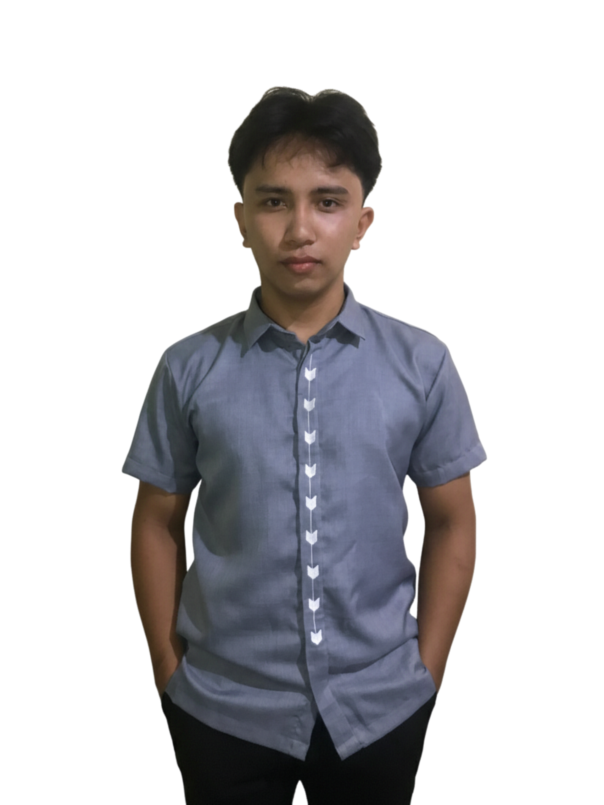

Graduating IT student passionate about web systems, educational applications, and interactive game development using modern technologies and creative problem-solving.
View Projects
I am a graduating Bachelor of Science in Information Technology student with interests in full stack web development, educational systems, and game application development using Godot Engine. I enjoy creating responsive systems, interactive applications, and user-friendly experiences while continuously improving my technical and problem-solving skills.
HTML, CSS, JavaScript
PHP, Firebase RTDB
Godot Engine
MySQL, Firebase
System Testing, Bug Reporting
PC Building & Maintenance
Educational RPG game for elementary students focused on Mathematics and Science learning through interactive gameplay and quizzes.
Beverage Record Management System developed for inventory tracking and beverage monitoring.
Worked as a QA member responsible for usability checking, issue documentation, and system testing.
Responsive portfolio website showcasing projects, technical skills, and development experience.
Motivated and adaptable Information Technology student with hands-on experience in technical support, networking, software development, and system troubleshooting. Developed a strong ICT foundation through practical experience in LAN cable crimping, PC assembly and maintenance, operating system installation, printer and file sharing configuration, driver installation, and basic network setup. Also gained familiarity with multimedia and creative tools such as Adobe Photoshop for digital design tasks. Expanded technical skills through programming, database management, and web development using Java, MySQL, PHP, HTML, CSS, JavaScript, and XAMPP. Experienced in frontend development, backend integration, UI/UX prototyping using Figma, debugging, testing, and collaborative system development. Also knowledgeable in game application development using the Godot. Currently gaining industry experience through internship work involving Quality Assurance, bug fixing, technical troubleshooting, and office-based IT support tasks. Recognized for being a fast learner, detail-oriented, and capable of adapting to both technical support and development-related responsibilities in collaborative environments.
triunfante.kher@dnsc.edu.ph
github.com/Pawpieeeeee
rikushi022622